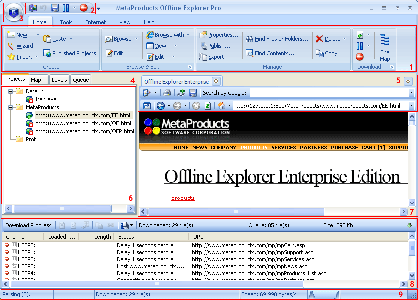

Hay nueve secciones principales en la ventana Portable Offline Browser:
Barra de Herramientas de Acceso Rãpido - contiene los botones usados mãs frecuentemente. Usted puede agregar/quitar botones usando el menú personalizar a la derecha de esta barra de herramientas.
Botón de Aplicación - haga clic para mostrar el menú Imprimir/Opciones/Salida y otros elementos.

Usar Portable Offline Browser es muy simple. Hay una lista de Proyectos, cada una describe una tarea de descarga particular: qué sitio web descargar, cuãndo cargarlo, cuãntos archivos, qué archivos, etc. Los Proyectos pueden clasificarse agrupãndolos en Carpetas.
Hay tres pasos generales para usar Portable Offline Browser:
sección Descargar el Proyecto
Ver los resultados cuando la descarga ha finalizado
Portable Offline Browser le permite post procesar los sitios web descargados. Lea mãs sobre Extracción de Datos aquí.